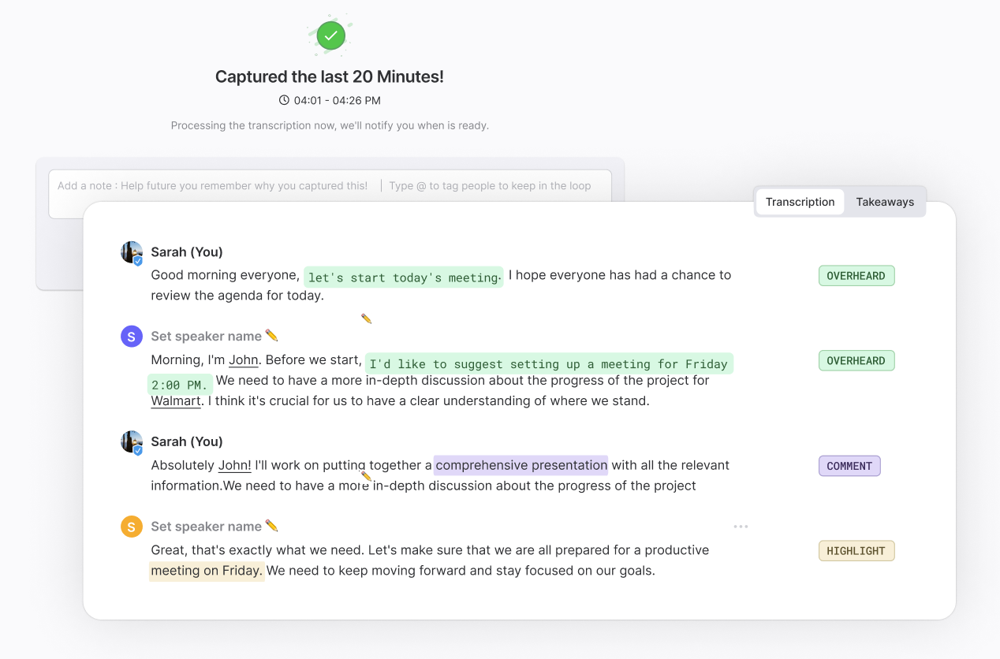

Ramble AI is a on device meeting note taker. Ramble can listen-in to any meeting WITHOUT needing a bot. Ramble then summaries and extracts a list of all the commitments/follow-ups that were discussed making it easy to stay on top of the work that needs to get done.
Users love Ramble for:
- The ability to go backwards in time (up to 1hr)
- The summaries
- The extracted follow-ups
See www.Ramble.ai for more details and to give it a try.
